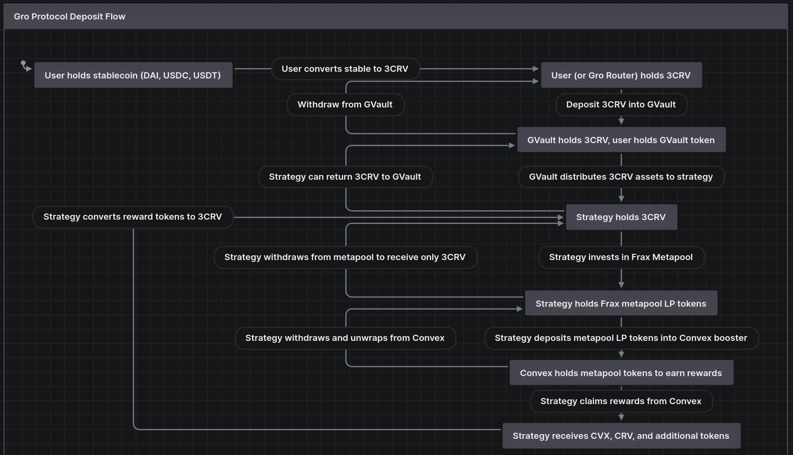
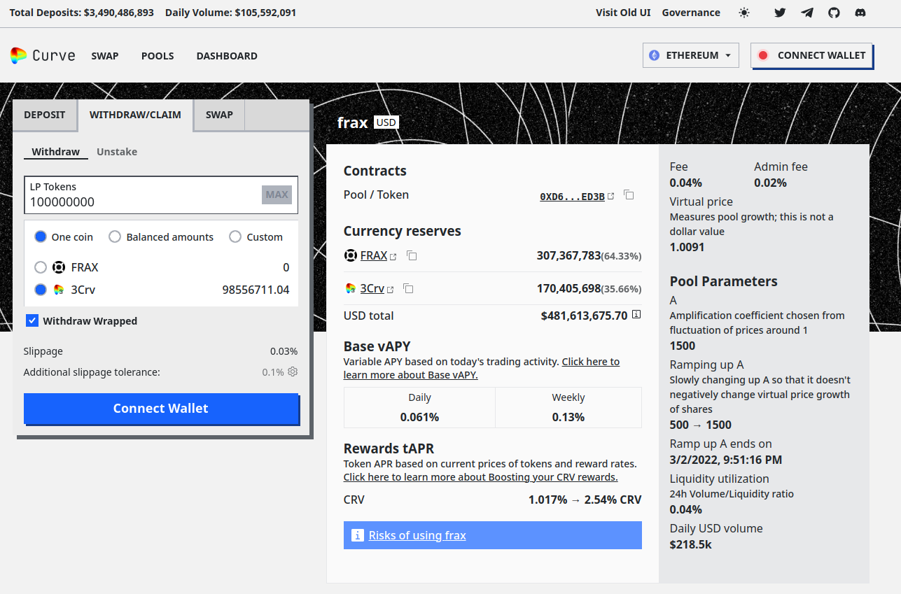
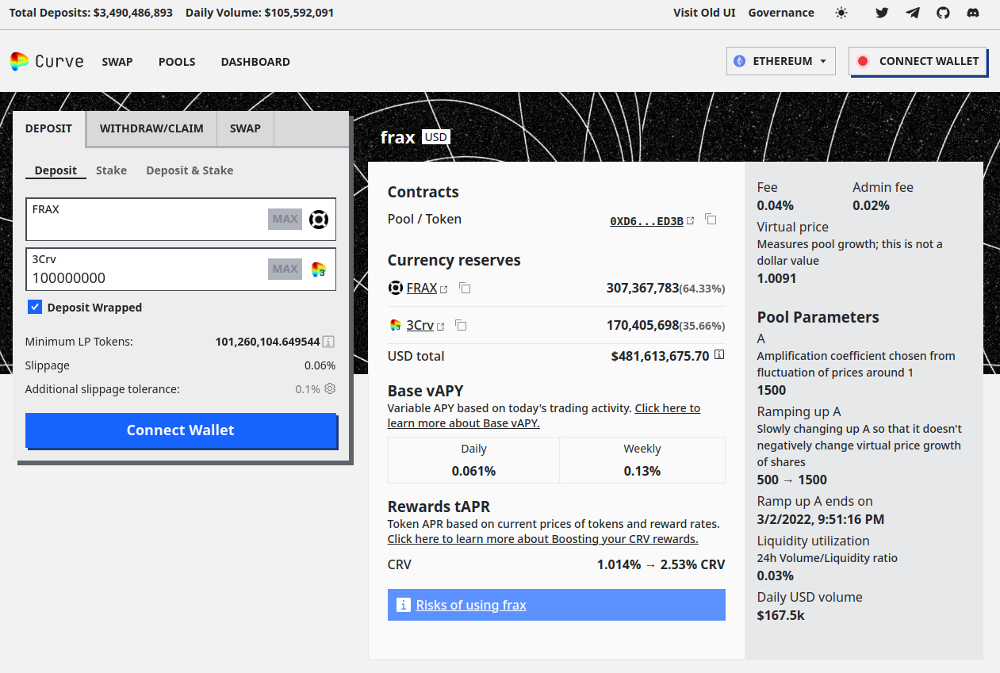

yAcademy Gro Protocol Review
Review Resources:
Residents:
- engn33r
- usmannk
Table of Contents
- Review Summary
- Scope
- Code Evaluation Matrix
- Findings Explanation
- Critical Findings
- High Findings
- Medium Findings
- 1. Medium -
sellAllRewards()reverts with non-zeronumberOfRewards - 2. Medium -
wethAmountin rewards calculations should be balanceOf - 3. Medium - Tranche deposit/withdrawal denial of service
- 4. Medium - Unreliable Senior Tranche yield
- 5. Medium - Timing mismatch between time-gated actions
- 6. Medium - Whale
invest()anddivest()denial of service (DoS)
- 1. Medium -
- Low Findings
- 1. Low - Strategy migration should remove old approvals
- 2. Low - Inconsistent ERC20 imports
- 3. Low - Similar functions have different logic
- 4. Low - ConvexStrategy owner can sweep tokens
- 5. Low - Inconsistent minimum reward amount
- 6. Low - Inconsistent metapool fee inclusion
- 7. Low - Potentially incorrect branching logic
- 8. Low -
setStrategies()doesn’t setstrategyCheckvalues - 9. Low - Weak oracle result staleness check in
staleCheck() - 10. Low - No
minDepositin GTranche - 11. Low - Volatile token price causes higher vault fees
- 12. Low - High default slippage tolerance
- Gas Savings Findings
- Informational Findings
- 1. Informational - Unusual
minDepositchoice - 2. Informational - Fees may be sent to address(0)
- 3. Informational - Missing
_minAmountcheck inredeem - 4. Informational -
_ownerargument shadows Ownable state variable - 5. Informational - Junior tranche lacks immediate withdrawal guarantees
- 6. Informational - Change call sequence for reentrancy mitigation
- 7. Informational - Undocumented assumption of private Gelato mempool
- 8. Informational - Inconsistent interface files
- 9. Informational - Inconsistent Uniswap array indices
- 10. Informational -
_additionalRewardTokens()works in unexpected way - 11. Informational - Non-ideal
_sellAdditionalRewards()min reward limit - 12. Informational - Strategy migration logic can revert
- 13. Informational - Theoretical casting overflow
- 14. Informational - Differing approach to keeper role
- 15. Informational - Duplicate strategies possible with
setStrategies() - 16. Informational - Unnecessary ERC4626 casting
- 17. Informational -
getSwappingPrice()doesn’t make sense with single strategy and vault - 18. Informational - No upper limit to Junior Tranche leverage or fixed yield
- 19. Informational - Multiple migration functions increase
trancheBalances - 20. Informational - Unclear redistribution of vault fees
- 21. Informational - Tranche tokens not compliant with ERC4626
- 22. Informational - Silent returns
- 23. Informational - Minor nitpicks
- 1. Informational - Unusual
- Final remarks
- About yAcademy
Review Summary
Gro Protocol
Gro Protocol is a stablecoin yield aggregator. The protocol uses a Junior Tranche and a Senior Tranche design to maximize yield in the Junior Tranche while providing asset protection in the Senior Tranche. The tranches will hold a basket of ERC4626 tokens, where the choice of tokens and weighting between them can be set by the creator of the vault. The vault invests the assets using a collection of strategies, which can allocated the assets into different protocols. Unlike some yield aggregators, the protocol does not require the strategies to remain “number go up”, so if losses are incurred by the Junior Tranche, the losses are distributed across the shareholders during the time of withdrawal. There is a keeper-triggered stop loss feature to provide a safeguard in the event of unexpected events.
The contracts of the Gro Protocol Repo were reviewed over 14 days. The code was reviewed by 2 residents between December 19, 2022 and January 1, 2023. The repository was under active development during the review, but the review was limited to the latest commit at the start of the review. This was commit f1831bdb353d4a0b3a8937087e1663f73b75e905 for the Gro Protocol repo.
Scope
The scope of the review consisted of all the contracts in the repo, excluding those that were not used by the protocol such as PnL.sol. This included several key subcomponents in the system, including:
- GRouter.sol: used to simplify user interactions by handling asset conversions and deposits in a single transaction
- GVault.sol and ConvexStrategy.sol: Provide an ERC4626 token that generates yield
- GTranche.sol and PnLFixedRate.sol: Enables a Junior and Senior Tranche structure. The Senior Tranche offers asset value protection with fixed yield on the underlying USD asset value while the Junior Tranche offers leveraged yields.
In the future, the goal is to allow different ERC4626 tokens to be deposited into the Gro Tranche system, but for this review only one specific ERC4626 token corresponding to a single GVault and strategy was examined. Similarly, while Gro Protocol could expand to other EVM-compatible chains in the future, only the Ethereum mainnet deployment was considered during this review. The end-to-end flow of value between the user holding stablecoins and the way that Gro provides this yield and protection involves many steps, so it is visualized below for easier understanding.

After the findings were presented to the Gro Protocol team, fixes were made and included in several PRs.
This review is a code review to identify potential vulnerabilities in the code. The reviewers did not investigate security practices or operational security and assumed that privileged accounts could be trusted. The reviewers did not evaluate the security of the code relative to a standard or specification. The review may not have identified all potential attack vectors or areas of vulnerability.
yAcademy and the residents make no warranties regarding the security of the code and do not warrant that the code is free from defects. yAcademy and the residents do not represent nor imply to third parties that the code has been audited nor that the code is free from defects. By deploying or using the code, Gro Protocol and users of the contracts agree to use the code at their own risk.
Code Evaluation Matrix
| Category | Mark | Description |
|---|---|---|
| Access Control | Average | There are at least three privileged types of addresses (owner, keeper, whitelisted) in the protocol. Access controls appear to be applied properly, but adding privileged roles always creates the potential of an increased attack surface if one of these addresses is compromised or goes rogue. |
| Mathematics | Average | The math in this protocol is primarily used for internal accounting, but there some casting operations between int256 values and uint256 values that could be problematic in some edge cases. |
| Complexity | Low | The complexity of the system as a whole is quite high, with integration to at least 6 external protocols (Curve, Convex, Uniswap V2, Uniswap V3, Gelato, Chainlink) and a large amount of internal accounting math. The large number of token swaps and reliance on external protocols for pricing is an important part of the system, but not very simple to understand at the deepest levels. The built-in assumptions about how Gelato works that is not documented in Gelato’s documentation is an additional point of concern. |
| Libraries | Average | OpenZeppelin and solmate libraries are used in this protocol. There is an average number of libraries and external dependencies used, which can add risk if there is a vulnerability found in the underlying library code or external interactions. Using OpenZeppelin and solmate together in a single project can sometimes cause a mismatch of features and functionality. |
| Decentralization | Average | Like many protocols, the design of the Gro protocol enables migration for future upgrades and emergency functions for unexpected scenarios where market volatility is exceptionally high or an underlying DeFi lego block experiences problems. This design is double edged, as it provides additional benefits to users but at the risk of trusting the owner and other addresses that have elevated privileges to call specific functions (i.e., onlyOwner, onlyWhitelist, keeper). |
| Code stability | Average | Part of the code base builds on existing code that has been audited and live in production for over a year. Other elements of the design have been implemented and tested by other protocols. The code base did not go through any changes during the audit. |
| Documentation | Good | The documentation for the Gro protocol provided to the reviewers surpassed expectations. The documentation explained the system assumptions and requirements clearly. While there was an absence of good NatSpec comments in some places, the overall protocol documentation made up for this omission. |
| Monitoring | Good | Events were consistently emitted for crucial functions that involved the flow of assets. |
| Testing and verification | Average | Foundry and brownie tests exist for Gro. The foundry tests had good coverage for some of the most important contracts, but other contracts were near or below 70% code coverage. The coverage numbers in the Gro documentation did not exactly align to the latest coverage numbers. Coverage could be improved |
Findings Explanation
Findings are broken down into sections by their respective impact:
- Critical, High, Medium, Low impact
- These are findings that range from attacks that may cause loss of funds, impact control/ownership of the contracts, or cause any unintended consequences/actions that are outside the scope of the requirements
- Gas savings
- Findings that can improve the gas efficiency of the contracts
- Informational
- Findings including recommendations and best practices
Critical Findings
None.
High Findings
1. High - Underflow in int256 -> uint256 conversion
SafeMath does not apply to casting. Casting happens between uint256 and int256 values which can lead to a problematic underflow.
Technical Details
In GTranche.sol, pnlDistribution() and _pnlDistribution() calculate the new _trancheBalances in int256 values before casting them to uint256 when storing in the return variables. This final casting will cause an underflow if the int256 value _trancheBalances is negative. For example:
- Assume a scenario where the Junior Tranche is permitted 50x leverage, so the Senior Tranche has 5000 wei and the Junior Tranche has 100 wei (root causes include: no minimum deposit in the tranche, no limit on the leverage allowed, no limit on the fixed yield paid to the Senior Tranche)
- If the PnL distribution is not done in a long time, it is possible that the
seniorProfitowed to the Senior Tranche will be greater than 100 wei. This needs to be paid to the Senior Tranche even if the profit of the tranche is zero (iflastTotal <= totalValuethendistributeProfit()will be triggered). distributeLoss()preventsloss[0]from holding a value that is greater than_trancheBalances[0], which would cause a negative_trancheBalances[0]after this subtraction and would later underflow. In contrast,distributeProfit()has no similar check and there is even a comment stating that the profit to the Junior Tranche can be negative, which would make it similar to a loss scenario for this tranche. If the value of-1 * (_amount - seniorProfit)is greater than_trancheBalances[0], then the addition operation will actually become a subtraction and result in_trancheBalances[0]holding a negative value, which would underflow in a later casting.
The same underflow issue may theoretically occur with distributeLoss() if _amount - _trancheBalances[0] > _trancheBalances[1]. This might be possible in a tranche setup where nearly all the deposits are in the Junior Tranche so the utilization ratio is nearly zero, but an accounting error causes the losses to be greater than the total tranche assets. This scenario seems unlikely but still may be worth protecting against.
Impact
High. An underflow in the internal PnL accounting that causes the balance of the Junior Tranche to become extremely large would allow for almost infinite deposits into the Senior Tranche, even though there are not sufficient real assets in the Junior Tranche to protect these deposits.
Recommendation
In this specific case, it is sufficient to confirm that _trancheBalances[0] + (_amount - seniorProfit) > 0 before this line. In general, it is best to use OpenZeppelin SafeCast, solmate SafeCastLib, or implement a similar form of over/underflow avoidance in GTranche.sol and other parts of Gro that convert between int256 and uint256.
Developer Response
Acknowledged, fixed in #62 and discussed in #2.
Medium Findings
1. Medium - sellAllRewards() reverts with non-zero numberOfRewards
The additional reward tokens are never approved for the Uniswap V2 router, so the Uniswap V2 swapExactTokensForTokens() call will revert.
Technical Details
The swapExactTokensForTokens() function in Uniswap V2 Router has a safeTransferFrom() call. The address calling the Uniswap V2 router must approve the tokens for the Router before calling this function, otherwise the function will revert. The ConvexStrategy fails to approve additional reward tokens before calling Uniswap V2.
Impact
Medium. Important functions will revert if there are any reward tokens.
Recommendation
In setAdditionalRewards(), make two changes:
- Before the existing
rewardTokensarray is deleted, set the approval for all tokens to zero - In the for loop where the
rewardTokensarray is populated, set an infinite approval for this token to the Uniswap V2 Router
Developer Response
Acknowledged, fixed in #52 and discussed in #3.
2. Medium - wethAmount in rewards calculations should be balanceOf
_sellRewards() sells reward tokens to WETH, then converts the WETH to USDC to reinvest into 3CRV. The current logic could result in WETH building up in the strategy over time without getting converted into 3CRV, resulting in a lost yield opportunity for depositors.
Technical Details
When _sellRewards() calculates the rewards that can be reinvested into 3CRV, it starts calculating with a wethAmount of zero. However, the minimum amount for converting CRV rewards or CVX rewards to ETH is 1E18 of CRV or CVX, while the minimum amount for converting ETH to 3CRV is 1E16 ETH. Assuming the current prices of $1200 WETH, $0.5 CRV, and $3.50 CVX, it is possible for a scenario where $11 worth of CRV and CVX is converted into WETH, but because the 1E16 threshold for converting WETH to 3CRV is $12, the WETH will not be converted into 3CRV. If this case happens many times, substantial WETH could accumulate in the strategy without getting reinvested to earn more yield.
Impact
Medium. WETH could accumulate in the contract over time without getting reinvested. The current contract would allow the owner could sweep and reinvest manually, but if this process is not automated it can result in lost yield for users.
Recommendation
Consider removing wethAmount in _sellRewards() completely and instead reference the current WETH balance in the strategy when determining if WETH should be swapped and reinvested:
- if (wethAmount > MIN_WETH_SELL_AMOUNT) {
+ if (IERC20(WETH).balanceOf(address(this)) > MIN_WETH_SELL_AMOUNT) {
Developer Response
Acknowledged, fixed in #54 and discussed in #5.
3. Medium - Tranche deposit/withdrawal denial of service
It is possible for the utilisation ratio of the two tranches to be greater than utilisationThreshold. If this scenario occurs and a user wishes to withdraw or deposit to a tranche with an amount that does not bring the tranches back under the utilisationThreshold, this can result in a denial of service for most users where a single whale-sized deposit or withdrawal must happen in order to bring the utilisation ratio below utilisationThreshold.
Technical Details
The current code is written in a way that assumes the utilisation ratio remains below the utilisationThreshold unless a deposit or withdrawal will move it above the threshold. In fact, the utilisation ratio can achieve a value greater than utilisationThreshold in a couple of ways:
- The owner can set
utilisationThresholdto any value withsetUtilizationThreshold(). If the threshold is set to a value less than the current utilisation ratio, it can break assumptions about how the protocol should work and prevent tranche deposits or withdrawals. - Losses for the Junior Tranche may result in a scenario where the utilisation ratio exceeds the
utilisationThreshold. Note that the Junior tranche can experience a loss even whendistributeProfit()is called because the yield paid to the Senior Tranche depositors may exceed the profit earned.
If the utilisation ratio exceeds the utilisationThreshold, a GTranche deposit() or withdraw() that attempts to move the utilisation ratio in the correct direction may revert if it does not bring the ratio below utilisationThreshold. This behaviour breaks an assumption in the protocol documentation that such actions should always be allowed.
Impact
Medium. The tranche design requires the Junior Tranche to always allow deposits and Senior Tranche should always allow withdrawals, but these requirements can be broken in edge cases.
Recommendation
Allow GTranche deposit() and withdrawal() to happen even if trancheUtilization > utilisationThreshold. If trancheUtilization > utilisationThreshold, then the trancheUtilization should be reduced as a result of the deposit or withdrawal action when compared to the value of trancheUtilization before the deposit or withdrawal so that the trancheUtilization is changed in a directionally correct manner.
Developer Response
Acknowledged, won’t fix.
- Owner is a trusted party and therefore is not expected to set the
utilisationThresholdin this way. - This is acknowledged as part of the design and is not considered an issue.
Addressed in #6.
4. Medium - Unreliable Senior Tranche yield
The Senior Tranche is designed to earn a fixed amount of yield. This yield is not always accounted for in the PnL calculations.
Technical Details
PnLFixedRate.sol does not account for seniorProfit in two cases:
- In
distributeLoss()when the loss is greater than or equal to the value of the Junior Tranche and could cause losses for the Senior Tranche - In
distributeProfit()when the utilisation ratio is greater thanutilisationThreshold
Impact
Medium. The PnLFixedRate.sol calculations do not account for seniorProfit in less common edge cases.
Recommendation
The amount seniorProfit should likely be summed into loss[1] or profit[1] respectively. Otherwise, when distributeAssets() is called and fixedRate.lastDistribution is updated without the seniorProfit getting added to either tranche, users who deposited into the Senior Tranche will lose out on the yield they should have received since the previous distribution.
Developer Response
Acknowledged, won’t fix. By design, senior tranche assets are only protected by the value of junior tranche assets. A highly leveraged tranche structure can lead to greater risk to senior tranche assets. Addressed in #7.
5. Medium - Timing mismatch between time-gated actions
_calculateLockedProfit() uses a 24 hour interval releaseTime to release profits to the vault. In contrast, the lockedProfit amount is only updated when report() is called by the strategy which has a MIN_REPORT_DELAY value of 48 hours.
Technical Details
_calculateLockedProfit() is designed to slowly release profits to the GVault depositors. If the releaseTime is surpassed, which is 24 hours, it returns zero, which means no profit is locked. The lockedProfit value is updated when report() in GVault is called by a strategy’s runHarvest(). ConvexStrategy’s canHarvest(), which indicates when a keeper can call runHarvest(), has a constant MIN_REPORT_DELAY value of 48 hours. This means that if MIN_REPORT_DELAY is the determining factor for when a harvest happens, _calculateLockedProfit() will return zero for roughly half of that minimum time period. During the time that _calculateLockedProfit() returns zero, the profit calculation in PnLFixedRate of totalValue - lastTotal will return zero. This will causes the Senior Tranche to take value from the Junior Tranche to pay the fixed yield of the Senior Tranche.
An example of how this could be leveraged to cause a loss for Junior Tranche holders:
- Depositor deposits 3CRV into the GVault
- The GVault does not move 3CRV to the strategy until
report()is called by a strategy, so the assets may not maximize their yield for some time - Depositor deposits their GVault ERC4626 tokens into the Senior Tranche and soon withdraws. The deposit and withdrawal may both be done in a short period (say, 24 hours) while
_calculateLockedProfit()is returning zero. This means beforereport()will not have been called to deposit the loose 3CRV in the GVault to maximize yield, yet the depositor claims their fixed yield from the Senior Tranche at the cost of Junior Tranche depositors, who don’t reap the full benefits of the 3CRV deposit into the GVault.
If the above actions are performed frequently with large amounts of capital, say twice a week, the Junior Tranche may be less appealing for depositors. This is because the Junior Tranche is willing to pay the Senior Tranche the borrowing cost for leverage, but this cost makes more sense if the Junior Tranche is able to use the 3CRV in the strategy and not when it is sitting idle in the GVault. This scenario would get worse if the tranche had a large utilization ratio, say 10x, because the fee paid to the Senior Tranche would be larger. The flip side of this is that Junior Tranche depositors would be incentivized to withdraw their deposits during the time when _calculateLockedProfit() returns zero for the same reason.
Impact
Medium. Many withdrawals from the Senior Tranche may extract substantial value from the Junior Tranche when _calculateLockedProfit() returns zero.
Recommendation
Consider requiring strategies to use the same MIN_REPORT_DELAY value as the GVault’s releaseTime. Other redesigns should be considered as well to minimize the time when _calculateLockedProfit() returns zero.
Developer Response
Acknowledged, will fix in later release. Addressed in #8.
6. Medium - Whale invest() and divest() denial of service (DoS)
If a whale deposits a large enough amount of 3CRV into the GVault, ConvexStrategy may not be able to deposit the large amount into the Curve metapool without substantial slippage. This can cause invest() in ConvexStrategy to revert and block the strategy’s harvesting from operating properly. The same could happen with divest(), but would require the whale creating an imbalance in the Curve pool outside of Gro, which is likely an unprofitable approach.
Technical Details
A whale may deposit an extremely large amount of 3CRV into GVault. When the GVault provides this 3CRV to ConvexStrategy to invest, the invest() function makes sure that the liquidity added to the metapool is within proper slippage tolerance. If the Curve pool is imbalanced sufficiently by the added liquidity, it may not return sufficient value and cause invest() to revert due to the slippage exceeding the slippage tolerance. This denial of service would not cost the whale much to sustain the DoS because they could deposit the GVault tokens into the Senior Tranche (at least until the utilization ratio is met) and receive their fixed yield, even though the Junior Tranche is not receiving its yield because the strategy’s harvesting mechanism is locked up. In theory this could lead to bankrupting the Junior Tranche if carried out for long enough because the whale’s deposit can’t be deposited into the metapool to maximize rewards, like the “leach attack” described in a separate finding.
divest() has a similar slippage check that may also revert under some conditions. Since users cannot control when divest happens, the whale would need to imbalance the pool outside of Gro. This DoS is likely far more costly than the invest() DoS vector because imbalancing the Curve pool would most likely create and arbitrage opportunity.
Impact
Medium. Denial of Service of a key function in the protocol could happen and there does not appear to be a simple way to resolve the situation.
Recommendation
Modify invest() to avoid a revert in this case of a whale deposit. For instance, invest() could calculate the maximum assets that could be deposited into the metapool within slippage limits and then deposit that amount. Alternatively, set an owner controlled max cap on the total assets value than the GVault can receive in deposit() to add one layer of prevention for this edge case.
Developer Response
Acknowledged, will fix in #9.
Low Findings
1. Low - Strategy migration should remove old approvals
ConvexStrategy has logic to migrate to a new metapool and LP token with setPool(). Before the migration sets an infinite approval for the metapool and LP token, the old metapool and LP token that are no longer used should have the existing approval removed for the safety of deposited assets.
Technical Details
setPool() in ConvexStrategy.sol gives a new metaPool infinite approval. But when this happens, the old metapool (if one was previously set) does not have its infinite approval revoked. If the old metapool had a security issue, the inability to revoke the prior approval could be problematic and would require emergency mode activation which would not be required if the approval could be revoked. The same process should take place to remove the BOOSTER approval of the old LP token.
Impact
Low. Infinite approval of old metapool is not revoked when metapool is changed.
Recommendation
Revoke the approval to the newMetaPool address before the state variable is modified to hold the new metapool address. Consider removing the BOOSTER’s approval of the prior newLpToken token before that state variable is updated.
Developer Response
Acknowledged, fixed in #55 and discussed in #10.
2. Low - Inconsistent ERC20 imports
GVault, GRouter, and GMigration import the ERC20 library from solmate, while other contracts like ConvexStrategy and GToken import the ERC20 library from OpenZeppelin. This can cause incompatibilities or unexpected edge cases because the OpenZeppelin ERC20 library does not include EIP-2612 permit().
Technical Details
One example showing the mixup between the OpenZeppelin and solmate ERC20 libraries is in IGVault and GVault. IGVault imports IERC20 from OpenZeppelin while GVault imports ERC20 from solmate. The solmate ERC20 library has EIP-2612 support while OpenZeppelin does not include such logic in the default ERC20 file and instead packages it in the file draft-ERC20Permit.sol.
The way the code is currently written may be confusing for protocols integrating with Gro Protocol because The GVault ERC4626 token will support EIP-2612 but the GToken (and therefore the JuniorTranche and SeniorTranche) will not. Because the tranche is intended to be a wrapper for the GVault ERC4626, which does support permit(), this is not ideal because the tranche wrapper does not support permit() like the GVault ERC4626. The below slither commands can be used to demonstrate the difference in EIP2612 support.
slither-check-erc --erc ERC2612 --solc-remaps "@openzeppelin/=lib/openzeppelin-contracts/ @chainlink/=lib/chainlink-brownie-contracts/ ds-test/=lib/forge-std/lib/ds-test/src/" ./src/tokens/GToken.sol GToken
slither-check-erc --erc ERC2612 --solc-remaps "@openzeppelin/=lib/openzeppelin-contracts/ @chainlink/=lib/chainlink-brownie-contracts/ ds-test/=lib/forge-std/lib/ds-test/src/" ./src/GVault.sol GVault
Impact
Low. Gro protocol ERC20 tokens do not consistently support EIP2612.
Recommendation
Use consistent imports for Gro ERC20 tokens and throughout the protocol.
Developer Response
Acknowledged, fixed in #56 and discussed in #11.
3. Low - Similar functions have different logic
Two similar stop loss functions in GStrategyGuard have slightly different logic, potentially allowing a stop loss to be triggered in an unexpected situation.
Technical Details
executeStopLoss() includes the line if (strategy == address(0)) continue; which is not in canExecuteStopLossPrimer(). Likewise, canExecuteStopLossPrimer() includes the line if (strategyCheck[strategy].primerTimestamp == 0) continue; which is not in executeStopLoss(). The two functions should share logic. Currently, the lack of a zero check for strategyCheck[strategy].primerTimestamp in executeStopLoss() means a rogue keeper could execute a stop loss before primerTimestamp has been set to a non-zero value.
Impact
Low. Logic checks are not applied consistently and a keeper could execute a stop loss at an unintended time when primerTimestamp is zero.
Recommendation
Use consistent logic in similar functions for more predictable behaviour.
Developer Response
Acknowledged, fixed in #76 and discussed in #12.
4. Low - ConvexStrategy owner can sweep tokens
The owner of ConvexStrategy has permission to sweep any non-asset tokens. This can result in a rogue or malicious owner sweeping reward tokens, lpTokens from the metapool, or any other tokens. Even if the owner was prevented from sweeping the tokens in the rewardTokens array, the owner has permission to change the reward tokens and therefore change the blacklist of what tokens could be swept. Furthermore, the test deployment of ConvexStrategy has an owner address that is an EOA, which should not happen in the production release.
Technical Details
Many DeFi protocols attempt to remain immutable to enable the user to maintain control over their assets at all times. While the underlying asset token is prevented from owner sweeping, the rewards returned by the Curve metapool are impacted as are the metapool LP tokens. This could lead to loss of user funds if the owner count is compromised or acts maliciously. In order to increase trust in the protocol, the owner should be a sufficiently distributed multisig to allow users to trust it.
Impact
Low. While the owner is normally assumed to be a trusted party, there is potential loss of user funds if this assumption is broken.
Recommendation
Several improvements should take place:
- Prevent the owner from sweeping lptokens from the strategy by adding the line
if (address(lpToken) == _token) revert StrategyErrors.BaseAsset(); - Use a multisig that users can trust for the owner of ConvexStrategy
- Consider clarifying in documentation what the sweep function is intended to be used for and how reward token distribution to depositors may be impacted
Developer Response
Acknowledged, fixed in #57 and discussed in #13.
5. Low - Inconsistent minimum reward amount
_claimableRewards() compares the reward value in WETH to MIN_REWARD_SELL_AMOUNT, but the actual _sellRewards() function compares the WETH value to MIN_WETH_SELL_AMOUNT. The latter value of MIN_WETH_SELL_AMOUNT should be used in both functions.
Technical Details
_claimableRewards() should compare the WETH value of rewards to MIN_WETH_SELL_AMOUNT and not to , otherwise _claimableRewards() will not return a value if the amount of rewards has a value of less than 1 ETH, which is quite a large requirement for rewards values to be included in the calculations in rewards(). The existing strategy code will underestimate the rewards returned by _estimatedTotalAssets() when the value of _claimableRewards() is between 1E16 WETH and 1E18 WETH which impacts the PnL calculations.
Impact
Low. Incorrect minimum amount leads to exclusion of rewards in _estimatedTotalAssets() even when rewards value is non-negligible.
Recommendation
Replace MIN_REWARD_SELL_AMOUNT with MIN_WETH_SELL_AMOUNT on this line.
Developer Response
Acknowledged, fixed in #58 and discussed in #14.
6. Low - Inconsistent metapool fee inclusion
When invest() calculates slippage, it compares the amount of received assets with fees included to the slippage tolerance, while when divest() does the same it compares the amount of received assets without fees included to the slippage tolerance. These two functions are inconsistent and this could lead to higher slippage than expected in divest() when fees are factored in.
Technical Details
The Curve docs describe calc_token_amount(), which is used in divest(), with the following:
This calculation accounts for slippage, but not fees. It should be used as a basis for determining expected amounts when calling
add_liquidityorremove_liquidity_imbalance, but should not be considered to be precise!
This means that in invest(), the slippage calculation compares _credit, the initial 3CRV token amount, with amount * ratio, which is the 3CRV value after slippage and fees. In contrast, divest() compares _debt, the initial 3CRV token amount, with meta_amount * ratio, which is the 3CRV value after slippage but without fees.
Impact
Low. The strategy may experience more slippage than expected when divesting from the metapool due to the calculation omitting fees.
Recommendation
Standardize the approach to calculating acceptable slippage when depositing or withdrawing from the metapool. Consider using calc_token_amount() in both invest() and divest().
Developer Response
Acknowledged, won’t fix for reasons mentioned in #15.
7. Low - Potentially incorrect branching logic
Comments in the 3rd and 4th nested if statements in realisePnl() demonstrate there is unclear understanding of when this branching logic is activated. Specifically, there is duplicated logic that is never reached and should either be fixed or removed.
Technical Details
This line of realisePnl() is unreachable because if loss > _excessDebt evaluates to true, to flow would have entered this if statement instead. The duplicate line of logic should be removed or changed. The comment of here for safety, but should really never be the case before the line of code that is duplicated and never reached indicates some of the nuance of the branching may not be fully understood.
Impact
Low. The logic has one inaccuracy and may have others based on the comments.
Recommendation
Fix or remove the unreachable logic. Create a visual to help with mapping the branching logic to each permutation of variable values. Document the nested if statements more clearly and make sure that the tests have (close to) full coverage of the branches.
Developer Response
Acknowledged, fixed in #59 and discussed in #16.
8. Low - setStrategies() doesn’t set strategyCheck values
addStrategy() and removeStrategy() set timeLimit and active values in the strategyCheck mapping. setStrategies() adds strategies like addStrategy() but does not allow strategyCheck to be updated.
Technical Details
setStrategies() does not allow setting values in strategyCheck, which is in contrast to addStrategy(). This could impact the use case where setStrategies() is useful. For example, if strategyCheck values are not set, the strategy will never return true in functions like canEndStopLoss().
Impact
Low. setStrategies() doesn’t provide the same abilities as the addStrategy().
Recommendation
Consider modifying setStrategies() to set corresponding strategyCheck values.
Developer Response
Acknowledged, fixed in #60 and discussed in #17.
9. Low - Weak oracle result staleness check in staleCheck()
staleCheck() checks if the Chainlink oracle price data is stale. The staleness check only checks if the timestamp is from the last 24 hours, but a stricter check would also check if the roundId is stale.
Technical Details
staleCheck() only checks that the Chainlink price data is under 24 hours old. The staleness check does not consider whether the roundId data may be outdated. It is recommended to do both, as shown in other security report findings here and here. Specifically, the DAI/USD oracle updates more regularly than every 24 hours. Considering that the Gro protocol has protections in place for stablecoins losing their peg, improving the Chainlink price staleness check is a crucial consideration.
Impact
Low. The staleness check could provide a false positive, say in the case that the price data is 23 hours old but is not from the most recent roundId.
Recommendation
Consider modifying setStrategies() to the following:
function staleCheck(uint256 _updatedAt, uint80 _roundId, uint80 _answeredInRound) internal view returns (bool) {
return ((block.timestamp - _updatedAt >= STALE_CHECK) && (_answeredInRound == _roundId));
}
Developer Response
Acknowledged, won’t fix for reasons mentioned in #18.
10. Low - No minDeposit in GTranche
GVault has a minDeposit value which prevents extremely small deposits, such as depositing 1 wei. GTranche has no such minimum but may benefit from implementing one.
Technical Details
GVault sets a minDeposit value to prevent very small 1 wei deposits. GTranche has no comparable minimum value. When combined with the implementation of utilization() adding 1 wei to the denominator, the lack of a minDeposit is problematic in the following scenario:
- The
utilisationThresholdis set to 3E4, implying there can be 3 tokens deposit into the Senior Tranche for every token deposited into the Junior Tranche - 1 wei is deposited into the Junior Tranche
- 3 wei is deposited into the Senior Tranche, which should be the maximum amount permitted to maintain the 3-to-1 ratio
- With the current tranche holdings,
utilization()returns a value of(3 * 1E4) / (1+1) = 15000, which is half of theutilisationThresholdlimit of 3E4 - An additional 3 wei can be deposited into the Senior Tranche. Now
utilization()returns(6 * 1E4) / (1+1) = 30000, but the ratio of Senior Tranche deposits to Junior Tranche deposits is 6-to-1, not the originally intended 3-to-1
Beyond the risk of underinsured Senior Tranche deposits, another side effect of the lack of minDeposit is the possibility of an inflation attack.
Impact
Low. Utilization value calculation isn’t accurate with small amounts that are possible to deposit without a minDeposit amount.
Recommendation
- Implement a
minDepositamount in GTranche similar to GVault - Change the implementation of
utilization()and similar utilisation ratio calculations to:function utilization() external view returns (uint256) { (uint256[NO_OF_TRANCHES] memory _totalValue, , ) = pnlDistribution(); return _totalValue[0] > 0 ? (_totalValue[1] * DEFAULT_DECIMALS) / (_totalValue[0]) : type(uint256).max; }
Developer Response
Acknowledged, fixed in #61 and discussed in #19.
11. Low - Volatile token price causes higher vault fees
The docs for the currently deployed version of the Gro protocol (not the one that was reviewed) states:
When users withdraw funds from Vault, they pay a 0.5% fee as a contribution to the remaining HODLers.
This is not how _calcFees() in the GVault works. In fact, in a volatile market where the price moves up and down a lot but ends up at the same place after some time, fees will be charged to the amount that was gained every time the strategy calls the GVault’s report(), which can mean a lot more fees than a simple one-time fee on withdrawal.
Technical Details
_calcFees() is called only once in GVault, from report(). _calcFees() is a bit of a misnomer because the function also takes those fees and sends them to the feeCollector address specified by the owner using setFeeCollector() while returning the gains amount minus fees. The gains are defined as the difference between all the strategy’s assets (loose assets, LP tokens, and rewards) and the strategy’s debt, which is a value stored in strategies[strategyAddress].totalDebt in the GVault. A key part of this is that when a strategy reports a loss, the totalDebt of the strategy is reduced to account for the loss, so it is as though the strategy received fewer assets to begin with. The combination of how fees are taken from gains and the goal post for how gains are calculated getting moved on every loss creates a problematic combination. Consider the following series of events:
- Value of Strategy is $1000
- Strategy loses $20 and
report()is triggered - Strategy gains $20 and
report()is triggered (pays vault fee on $20 gains) - Strategy loses $20 and
report()is triggered - Strategy gains $20 and
report()is triggered (pays vault fee on $20 gains)
The strategy has paid the vault fee twice even though the value in the strategy hasn’t changed. It is only the volatility in the strategy’s assets that caused the fees to be applied. This penalizes depositors for market volatility instead of penalizing them for withdrawing, which is how the Gro protocol is documented to work today. Note that this specific strategy is built on 3CRV and the Frax Curve metapool, so the value of the LP tokens should only increase and not be subject to such volatility.
By deducting fees at the time of profit, there is less value in the vault to compound and grow, which slightly reduces the appeal of the strategy.
Impact
Low. Fees create a penalty for depositors in volatile markets, but should instead only penalize depositors who withdraw. In actuality, because 3CRV should only increase in value, the two are similar.
Recommendation
Only apply a fee on withdrawal to enable to net vault value to continue compounding until a user withdraws their deposit. A fee on withdrawal would create a disincentive for attack vectors such as this yearn vault attack.
Developer Response
Acknowledged, known but won’t fix for reasons mentioned in #20.
12. Low - High default slippage tolerance
The value (PERCENTAGE_DECIMAL_FACTOR - baseSlippage) / PERCENTAGE_DECIMAL_FACTOR is the slippage tolerance for metapool deposits and withdrawals in invest() and divest(). The default value for this tolerance is unnecessarily large and likely due to a mistake in the decimal arithmetic. Fortunately baseSlippage can be fixed by the owner to correct similar errors in the future, but a better default value should be considered.
Technical Details
The default value of PERCENTAGE_DECIMAL_FACTOR if 1E4 while baseSlippage is 50. This means the default tolerance is (10000 - 50) / 10000 = 9950 / 10000 = 99.5%, allowing for 0.5% slippage, in invest() and divest(). When the Frax metapool was examined at the time of this review, the Curve Finance frontend estimated a 0.03% slippage if withdrawing 1E8 LP tokens, which was over 20% of the total supply of the metapool. Similarly, when estimating the slippage for a deposit of 1E8 CRV tokens, which would increase the existing balance of CRV in the metapool by over 50%, the frontend estimated a 0.06% slippage.


Given the size of the slippage with such large deposits or withdrawals, and considering that the default slippage tolerance on the Curve frontend for this Frax metapool is 0.1%, the existing combination of PERCENTAGE_DECIMAL_FACTOR and baseSlippage provides too large of a slippage tolerance.
Impact
Low. A large default slippage tolerance could lead to loss of value, but harvests are run by Gelato jobs which should offer MEV protection, even though this is not fully documented in Gelato network documentation yet.
Recommendation
Change the default value of baseSlippage to 10 or less. Most likely a baseSlippage value of 5 would suffice for normal operating conditions and deposit/withdrawal sizes. The root cause could be a typo in PERCENTAGE_DECIMAL_FACTOR that should be 1E5 (not 1E4) or a typo in baseSlippage that should be 5 (not 50).
Developer Response
Acknowledged, fixed in #53 and discussed in #4.
Gas Savings Findings
1. Gas - Use prefix in loops
Using a prefix increment (++i) instead of a postfix increment (i++) saves gas for each loop cycle and so can have a big gas impact when the loop executes on a large number of elements.
Technical Details
There are instances of this throughout the contracts, with examples of this optimization opportunity found in GStrategyGuard.sol, GTranche.sol, and GRouter.sol.
Impact
Gas savings.
Recommendation
Increment with prefix addition and not postfix in for loops.
Developer Response
Acknowledged, fixed in #64 and discussed in #21.
2. Gas - Unnecessary zero initializations
Setting a variable to its default value can waste gas.
Technical Details
There are instances of this throughout the contracts, with examples of this optimization opportunity found in GTranche.sol, GRouter.sol, StrategyQueue.sol, and ConvexStrategy.
Impact
Gas savings.
Recommendation
Remove zero initialization of variables.
Developer Response
Acknowledged, fixed in #65 and discussed in #22.
3. Gas - Use simple comparison
Using a compound comparison such as ≥ or ≤ uses more gas than a simple comparison check like >, <, or ==. Compound comparison operators can be replaced with simple ones for gas savings.
Technical Details
The withdraw() function in ConvexStrategy provides one example of this, but there are other instances in the contracts:
if (withdrawnAssets <= _amount) {
loss += _amount - withdrawnAssets;
} else {
if (loss > withdrawnAssets - _amount) {
loss -= withdrawnAssets - _amount;
} else {
loss = 0;
}
}
By switching around the if/else clauses, we can replace the compound operator with a simple one
if (withdrawnAssets > _amount) {
if (loss > withdrawnAssets - _amount) {
loss -= withdrawnAssets - _amount;
} else {
loss = 0;
}
} else {
loss += _amount - withdrawnAssets;
}
Impact
Gas savings.
Recommendation
Replace compound comparison operators with simple ones for gas savings.
Developer Response
Acknowledged, will fix in a future update. Discussed in #23.
4. Gas - Remove redundant check
mint() in GVault include an unnecessary check that can be removed.
Technical Details
mint() in GVault checks if assets is zero and then checks if assets is less than minDeposit. The first check is redundant because if assets is zero, then assets < minDeposit is true and it will revert in the next check. This suggestion assumes that minDeposit should be 10 ** _asset.decimals() instead of _asset.decimals(), since 10 ** X where X is a uint cannot result in a value of zero.
Separately, the returns in mint(), deposit(), and withdraw() are unnecessary and can be removed because the return value is the same as the named return variable.
Impact
Gas savings.
Recommendation
Remove the revert on this line of code because the zero check is included in the assets < minDeposit check:
- if ((assets = previewMint(_shares)) == 0) revert Errors.ZeroAssets();
+ assets = previewMint(_shares);
Developer Response
Acknowledged, fixed in #67 and discussed in #24.
5. Gas - Use Solidity errors in 0.8.4+
Using solidity errors is a new and more gas efficient way to revert on failure states.
Technical Details
Require statements are found in the JuniorTranche, SeniorTranche, GToken, and GVault contracts (examples include 1, 2, 3, 4). Using this new solidity feature can provide gas savings on revert conditions.
Impact
Gas savings.
Recommendation
Add errors to replace each require() with revert errorName() for greater gas efficiency.
Developer Response
Acknowledged, partially fixed in #66 and discussed in #25.
6. Gas - Declare variables immutable when possible
An immutable variable can provide gas saving compared to a non-immutable variable.
Technical Details
The IsGTrancheSet boolean is set only once in GMigration.sol and can be immutable.
Impact
Gas savings.
Recommendation
Make IsGTrancheSet immutable for gas savings.
Developer Response
Acknowledged, won’t fix for reasons mentioned in #26.
7. Gas - Use unchecked if no underflow risk
There is a subtraction operation that can use unchecked for gas savings.
Technical Details
One example where unchecked can be applied:
- loss = lastTotal - totalValue;
+ unchecked { loss = lastTotal - totalValue; }
Similar savings can be found throughout the contracts including here, here, and here.
Impact
Gas savings.
Recommendation
Use unchecked block if there is no overflow or underflow risk for gas savings.
Developer Response
Acknowledged, partially fixed in #69 and discussed in #27.
Informational Findings
1. Informational - Unusual minDeposit choice
minDeposit is set to _asset.decimals() but 10 ** _asset.decimals() may be a better choice to relate to the underlying asset, like what is done for FIRST_TOKEN_DECIMALS.
Technical Details
This line of GVault.sol may have a typo if the intent is to have a minimum deposit of at least one dollar (because the vault is designed for stablecoins).
Impact
Informational.
Recommendation
Modify the line with:
- minDeposit = _asset.decimals();
+ minDeposit = 10 ** _asset.decimals();
Developer Response
Acknowledged, partially fixed in #68 and discussed in #28.
2. Informational - Fees may be sent to address(0)
It is possible for vaultFee to be non-zero but the receiver of the fees, feeCollector, to remain the default address(0) value.
Technical Details
The GVault default is to have vaultFee and feeCollector remain unset, which keeps them at the default values of 0 and address(0) respectively. It is possible for vaultFee to be set to a non-zero value while feeCollector remains at zero, resulting in fees getting sent to address(0).
Impact
Informational.
Recommendation
Protections for owner errors are not strictly needed, but if guardrails against contract owner errors are worth some gas, consider this change:
+ error ZeroCollectorAddress();
function setVaultFee(uint256 _fee) external onlyOwner {
if (_fee >= 3000) revert Errors.VaultFeeTooHigh();
+ if (_fee > 0 && feeCollector == address(0)) revert ZeroCollectorAddress();
vaultFee = _fee;
emit LogNewVaultFee(_fee);
}
Developer Response
Acknowledged, won’t fix as mentioned in #29.
3. Informational - Missing _minAmount check in redeem
redeem does not check if the _minAmount asset requirement is met. The other three similar functions check if the assets amount is at least _minAmount.
Technical Details
deposit() and mint() verify the deposit amount is greater than minDeposit while withdraw() checks that the asset amount is greater than the user-specified _minAmount before transferring tokens. redeem() does have a comparable minimum value check before assets are transferred.
Impact
Informational.
Recommendation
Consider adding the line if (_assets < _minAmount) revert Errors.InsufficientAssets(); into redeem() to keep the GVault consistent with how it uses _minAmount.
Developer Response
Acknowledged, won’t fix as mentioned in #30.
4. Informational - _owner argument shadows Ownable state variable
There is a function argument and a state variable with the name _owner in GVault.sol.
Technical Details
withdraw() in GVault.sol has a _owner argument that shadows a state variable with the same name in OpenZeppelin’s Ownable library.
Impact
Informational.
Recommendation
Consider renaming the function argument to a name other than _owner to avoid confusion over which variable is used.
Developer Response
Acknowledged, won’t fix as mentioned in #31.
5. Informational - Junior tranche lacks immediate withdrawal guarantees
Depositors to the Junior Tranche not only are exposed to higher risk than the Senior Tranche, but are also exposed to the risk that their assets may not be possible to withdraw at all times. At worst, this could cause a “leach attack”.
Technical Details
In order to deposit in the Senior Tranche, there must be sufficient value in the Junior Tranche to protect Senior Tranche deposits. This means that if the Junior Tranche protects the Senior Tranche 1-to-1 and there is 100% utilization, no Junior Tranche funds can be withdraw. In the event that all depositors to the Junior Tranche wish to withdraw, there could be a “bank run” where the first users to withdrawer receive their funds, but when the utilization ratio hits 100%, no Junior Tranche funds can be withdrawn because they are needed to protect the funds in the Senior Tranche. This behaviour is the norm for tranche structures, but users who have not interacted with such a pool design may not clearly understand the limitations of the system. This could be problematic for users if they have a loan in a protocol like Aave that is about to be liquidated and they cannot withdraw their funds from the Junior Tranche to increase their loan collateralization ratio.
A real scenario where this would be incentivized to take place is a “leach attack”, when the fixed yield on the Senior Tranche exceeds what the underlying vault is capable of producing and the Senior Tranche depositors leach off the Junior Tranche value. If the Senior Tranche promised an absurdly high fixed yield, or if the underlying vault yield drops to a near-zero value, the Senior Tranche depositors would be more incentivized to keep their token in the Senior Tranche to receive the “impossibly good” yield, even though the yield the Senior Tranche is receiving is being taken from the token value of the Junior Tranche depositors (because the yield from the vault cannot cover the fixed yield amount). It is true that the tranche owner can set the fixed rate with setRate(), but there may be a delay before this happens (possibly a DAO vote), during which time value could be leached from Junior Tranche depositors and the Junior Tranche depositors would be unable to withdraw because 1. the utilization ratio does not permit it 2. the leaching causes a loss of value in the Junior Tranche which makes the utilization ratio even worse.
Impact
Informational.
Recommendation
Document clearly the lack of guarantees around immediate withdrawal for the Junior Tranche to try to prevent users from making poor decisions.
Developer Response
Acknowledged, no need to make changes to fix this as mentioned in #32.
6. Informational - Change call sequence for reentrancy mitigation
_withdraw(), redeem(), and report() should change the order of transferring assets and updating vaultAssets to follow checks-effects-interactions and get one step closer to not needing the nonReentrant modifiers.
Technical Details
In _withdraw(), funds are transferred out of the GVault before the vaultAssets state variable is updated. According to checks-effects-interactions, the external interactions should happen last, meaning the vaultAssets variable should be updated before funds are transferred. This is what the solmate ERC4626 implementation does by calling the internal _burn() first to update the totalSupply value before transferring funds, which is the opposite of when the transfer happens relative to _mint() in mint(). The same change can be applied to redeem() and report() (1, 2).
Impact
Informational.
Recommendation
Consider changing the order of operations so the subtraction from vaultAssets happens before assets are transferred outside of the GVault. This may allow the nonReentrant modifier to be removed in the future.
Developer Response
Acknowledged, won’t fix as mentioned in #33.
7. Informational - Undocumented assumption of private Gelato mempool
The design of the protocol assumes Gelato jobs execute transactions in a way that is MEV resistant. Gelato’s public documentation does not clearly state this is guaranteed. If this assumption is broken, the protocol could lose value.
Technical Details
MEV protection mitigates the risk of a frontrun, backrun, or sandwich that can extract value from a transaction. This most often happens during swap operations. The design of Gro Protocol assumes that when a Gelato keeper executes a transaction, there will be MEV protection. The Gelato documentation does not clarify that this is a guarantee that keepers offer and whether there is still risk of an uncle bandit attack. The MEV mitigation is expected to exist based on discussions with the Gro devs, but the lack of official documentation around the mempool guarantees provided by Gelato jobs, the possibility of changes over time, and the risk of a rogue Gelato keeper are all possible concerns with this approach.
Impact
Informational.
Recommendation
Gelato should clarify their approach to MEV protection for Gelato jobs. Before Gelato update their documentation, Gro should monitor the keeper-controlled actions in Gro for any potential foul play.
Developer Response
Acknowledged, will make a note about this in docs and inform Gelato as mentioned in #34.
8. Informational - Inconsistent interface files
The metapool in ConvexStrategy is cast with ICurveMeta or ICurve3Pool depending on the context. It would be best to keep the casting consistent.
Technical Details
metapool is cast as ICurve3Pool here because get_virtual_price() is found in the external Curve3Pool contract and is inherited by the metapool contract. However, the same could be said about remove_liquidity_one_coin(), but metapool is cast as ICurveMeta when removing liquidity (1, 2, 3) because the Curve3Pool usage in ConvexStrategy didn’t use that function.
Impact
Informational.
Recommendation
Copy get_virtual_price() from ICurve3Pool to ICurveMeta to allow consistent casting of metapool to ICurveMeta.
Developer Response
Acknowledged, fixed in #72 and discussed in #35.
9. Informational - Inconsistent Uniswap array indices
The quantity of output tokens from getAmountsOut() in Uniswap V2 is referenced in two different ways in ConvexStrategy. It would be best to maintain a consistent approach.
Technical Details
Uniswap references the amountOut value with amounts[amounts.length - 1] with comparing that value to amountOutMin, and this approach is found once in ConvexStrategy. Another approach of hard coding an index of 1 is found elsewhere.
Impact
Informational.
Recommendation
Reference the amount out value here with swap[swap.length - 1] to stay consistent with Uniswap V2.
Developer Response
Acknowledged, fixed in #73 and discussed in #36.
10. Informational - _additionalRewardTokens() works in unexpected way
rewards() in ConvexStrategy looks like it should return the estimated rewards that would be received if sellAllRewards() is called. But _additionalRewardTokens() in rewards() does not estimate the pending additional reward tokens, it just sums up the additional reward tokens that are already held by ConvexStrategy, which most often will be zero because the reward tokens will already have been swapped and reinvested.
Technical Details
In rewards(), _additionalRewardTokens() is summed with _claimableRewards(). The latter returns the value of claimable rewards that can be received if getReward() is called as it is in sellAllRewards(). In contrast, _additionalRewardTokens() does not do this. Instead, _additionalRewardTokens() sums the current balance of award tokens in the strategy. This can result in a different value than the return value of sellAllRewards(), which is likely unexpected behaviour.
Impact
Informational.
Recommendation
Modify _additionalRewardTokens() to calculate the estimated additional reward tokens that will be received from Convex instead of the additional tokens already held in the strategy contract.
Developer Response
Acknowledged, will fix in a future update. Discussed in #37.
11. Informational - Non-ideal _sellAdditionalRewards() min reward limit
_sellAdditionalRewards() uses a fixed minimum reward limit of 1E18 to determine whether to swap rewards to WETH or not. However, 1E18 can mean wildly different values for different tokens, and because the rewardTokens array can be changed depending on the current rewards, using a constant here is not an ideal choice.
Technical Details
Consider a value different from the current MIN_REWARD_SELL_AMOUNT used in _sellAdditionalRewards() because different tokens have different decimals values and different values. A more flexible choice of value would be preferable to enable flexibility with future reward tokens.
Impact
Informational.
Recommendation
Consider using 10**(IERC20(reward_token).decimals()) instead of the fixed 1E18 value, or consider a modifiable value in case high value tokens similar to WBTC or WETH are reward tokens.
Developer Response
Acknowledged, will fix in a future update. Discussed in #38.
12. Informational - Strategy migration logic can revert
When divest() is called with slippage set to true, the call can revert. This can happen when a migration is attempted because realisePnl() calls divest() with slippage set to true.
Technical Details
divestAll() is written to avoid a revert condition at all costs because it is intended to be used for the emergency scenario where reverting is not an option. divestAll() is called immediately before migratePool(). After the migration, realisePnl() is called which has has divest() calls (1, 2) which offer an opportunity for a revert to happen. This could prevent the migration from happening in some circumstances.
Impact
Informational.
Recommendation
Consider how the strategy owner would proceed with the migration in this revert scenario.
Developer Response
Acknowledged, won’t fix in the code but will add docs so this is handled properly. Discussed in #39.
13. Informational - Theoretical casting overflow
Casting is not protected by SafeMath and could overflow. There is one case where this may happen.
Technical Details
This line of StopLossLogic casts a uint256 dy_diff to an int256 value. It is possible a very large unsigned value would be converted to a negative number.
Impact
Informational.
Recommendation
Consider protecting against this casting overflow.
Developer Response
Acknowledged, won’t fix due to low probability. Discussed in #40.
14. Informational - Differing approach to keeper role
GStrategyGuard only allows a single keeper address while ConvexStrategy maintains a mapping of addresses to store multiple keepers. If GStrategyGuard is intended to have the same keeper addresses as ConvexStrategy, it should use a mapping.
Technical Details
The keeper variable in GStrategyGuard stores a single address while a similar keepers variable in ConvexStrategy allows for multiple addresses to serve as keepers. Allowing more keepers provides more flexibility if Gelato changes their operations to have multiple addresses executing transactions, or to allow the owner address to serve as a keeper.
Impact
Informational.
Recommendation
Consider using a keepers mapping in GStrategyGuard to allow for multiple keeper addresses.
Developer Response
Acknowledged, fixed in #75 and discussed in #41.
15. Informational - Duplicate strategies possible with setStrategies()
setStrategies() can store the same strategy more than once in the strategies array. This is specifically prevented in _addStrategy(), unlike many owner-controlled functions which have no safety guards.
Technical Details
_addStrategy() does not permit a strategy to be added to the strategies array if it is already in the array. But the owner could use setStrategies() to do the same.
Impact
Informational.
Recommendation
Remove the safety check for duplicate strategies in _addStrategy() which provides a false sense of security.
Developer Response
Acknowledged, will fix in a future update. Discussed in #42.
16. Informational - Unnecessary ERC4626 casting
The return value from FixedTokensCurve’s getYieldToken() is of type ERC4626, so the places where this return value is cast to an ERC4626 does unnecessary casting.
Technical Details
getYieldToken() in FixedTokensCurve returns an ERC4626 value. But GTranche needlessly casts this return value to an ERC4626 in several places (1, 2, 3, 4).
Impact
Informational.
Recommendation
Remove needless ERC4626 casting.
Developer Response
Acknowledged, fixed in #71 and discussed in #43.
17. Informational - getSwappingPrice() doesn’t make sense with single strategy and vault
getSwappingPrice() is intended to get swapping price between to underlying assets in the tranche but this function and its implementation doesn’t make sense when only one ERC4626 is deposited into the tranche.
Technical Details
The Gro protocol as examined only has one token that is deposited into it, as the return value of getYieldToken() shows. The current implementation of getSwappingPrice() allows any uint256 input values for function arguments i and j and always returns the input _amount which implies a 1-to-1 exchange rate between token i and token j. This return value doesn’t make sense. It would make more sense to follow an implementation like getYieldToken() shows and only allow an i and j value of zero, reverting in other cases.
Impact
Informational.
Recommendation
Consider a different implementation for getSwappingPrice() rather than returning a value that assumes a 1-to-1 exchange rate between arbitrary input tokens. The function is not called by the existing Gro implementation so it is not very important.
Developer Response
Acknowledged, won’t fix for reasons mentioned in #44.
18. Informational - No upper limit to Junior Tranche leverage or fixed yield
The Gro protocol has no upper limit to the leverage that a Junior Tranche can take on or the fixed yield owed to the Senior Tranche. In theory, a Junior Tranche could have 10,000x leverage when borrowing from a Senior Tranche. It is also possible to create a Senior Tranche with exceptionally good yield but that is unsustainable. The stability of the protocol at such extreme leverage values or fixed yield amounts could result in unexpected behaviour.
Technical Details
Setting an upper bound on the leverage available to a Junior Tranche, and therefore a lower bound on the protection available to Senior Tranche depositors, may be prudent to avoid blatant misuse of the Gro tranche design. Additionally consider a limit on the fixed yield amount, which could be adjusted by the protocol owner depending on market conditions. Be aware that the yield in the tranche design is dollar denominated, so if the underlying asset drops in value, there could be issues in paying the fixed yield to the Senior Tranche.
We can take one example of the Junior Tranche taking 20x leverage by borrowing from the Senior Tranche, with a fixed Senior Tranche yield of 2%:
100% utilizationRatio * (20x leverage - 1x from Junior Tranche) * 2% Senior Tranche Fixed Yield = 38% borrowing cost owed to Senior Tranche
Due to the amount of leverage in the Junior Tranche and the yield promised to the Senior Tranche depositors, the Junior Tranche could easily see losses if it cannot continue to deliver the 38% yield.
Impact
Informational.
Recommendation
Set an owner-controlled utilisationThreshold maximum to prevent the Junior Tranche from taking an extremely leveraged position and providing too little protection to the Senior Tranche. A similar approach for fixedRate.rate yield maximum would help with overpromising Senior Tranche depositors with an unsustainable model. One approach might be to verify that the product of the Senior Tranche fixed yield and the leverage is less than a certain owner-controlled value (say, 50%). If the goal is to cater to yield farming degens, this limit may not be necessary.
Developer Response
Acknowledged, won’t fix for reasons mentioned in #45.
19. Informational - Multiple migration functions increase trancheBalances
The trancheBalances mapping stores the internal accounting balances for the tokens held by the Senior Tranche and Junior Tranche. There are two migration functions in GTranche, migrateFromOldTranche() and migrate(). It appears as though only one should be used, but in the event that both are used, the trancheBalances mapping may double count or overcount the tokens in each of the tranches.
Technical Details
migrateFromOldTranche() increases the tranche balances here. migrate() does so here. The two migration functions appear to serve different purposes, but a boolean protecting the two functions from both getting called does not exist. Instead, hasMigratedFromOldTranche is only found in migrateFromOldTranche().
Impact
Informational.
Recommendation
Add a similar check for the value of hasMigratedFromOldTranche in migrate(), as well as toggling this boolean to true, like what is found in migrateFromOldTranche(). This would prevent migrate() from getting called more than once and would prevent both migration functions from being called in the same GTranche.
Developer Response
Acknowledged, fixed in #70 and discussed in #46.
20. Informational - Unclear redistribution of vault fees
_calcFees() calculates and sends GVault fees to a feeCollector address. It is unclear whether the feeCollector redistributes collected fees back to the protocol, and if so, whether this is done in a fair manner.
Technical Details
Existing Gro protocol documentation mentions the withdrawal fees are redistributed back to the protocol. While this may not be true with the upgraded Gro protocol, if the fees are to be redistributed to the protocol, it should be done in a way that is not gameable.
Impact
Informational.
Recommendation
Consider clarifying how and when the yield from withdrawal fees is redistributed to the pool so that it is done fairly and not frontrun.
Developer Response
Acknowledged, will update documentation to address this. Discussed in #47.
21. Informational - Tranche tokens not compliant with ERC4626
The tranche is described as providing a wrapper to the underlying ERC4626 tokens, but does not currently support ERC4626 itself. SeniorTranche and JuniorTranche do not implement certain ERC4626 functions.
Technical Details
To clarify, the tranche tokens do not currently implement ERC4626 but the documentation uses the word “ERC4626 wrapper” when describing the tranche, which could be misleading. GVault and tranche tokens import the same ERC4626 to implement basic ERC4626 support. GVault overrides many virtual functions from this import to implement them correctly according to ERC4626 specifications, but GTranche does not. The functions that should be implemented in GTranche to comply with ERC4626 include:
mint()deposit()withdraw()redeem()convertToShares()convertToAssets()maxRedeem()previewRedeem()maxWithdraw()previewWithdraw()maxMint()previewMint()maxDeposit()previewDeposit()
Impact
Informational.
Recommendation
Consider updating the documentation to remove the word “wrapper” and to clarify that the tranche tokens are not exactly ERC4626 tokens themselves but rather ERC20 tokens.
Developer Response
Acknowledged, will update documentation to address this. Discussed in #48.
22. Informational - Silent returns
If invalid values are given to move(), it does not revert but instead returns. This can lead to a misunderstanding where the user assumes the action was completed, when in fact it was not.
Technical Details
move() in StrategyQueue silently returns in three cases. This may give the owner calling moveStrategy() a false sense of confidence that the strategy was moved, when it in fact was not.
Impact
Informational.
Recommendation
Revert in the conditions that currently return. Provide the caller with a useful error.
Developer Response
Acknowledged, fixed in #74 and discussed in #49.
23. Informational - Minor nitpicks
General nitpicks with comments, naming, and typos in the contracts.
Technical Details
- Consider naming
withdrawalQueue(uint256 i)towithdrawalQueueAt(uint256 i)andwithdrawalQueue()tofullWithdrawalQueue(). - Consider clarifying the strategy return value is an address, not a Strategy struct.
getStrategyDebt()andgetStrategyAssets()return thetotalDebtof a strategy and might be improved with more similar names to avoid confusion over debt vs. assets.- NatSpec is incomplete for some functions, such as missing return value descriptions for
beforeWithdraw()/excessDebt/_excessDebtand no NatSpec for_removeStrategy()in GVault depositIntoTrancheForCaller()is missing a comment that _token_index of 3 or greater is 3CRV- Typo: adapetr -> adapter
- Typo: Apporve -> Approve
- Typo: CHIANLINK_FACTOR -> CHAINLINK_FACTOR
- Typo: add_liquididty -> add_liquidity
- Typo: strategies -> strategy’s and same here
- Typo: enstimated -> estimated
- Typo: excluding and profits -> excluding profits
- Typo: srategy -> strategy
- Typo: do generate -> to generate
- Typo: unledrying -> underlying
- Typo: beneth -> beneath and here
- Typo: baring -> bearing
- Typo: extensoin -> extension
- Typo: their -> there
- Typo: underlyng -> underlying
- Typo: prive -> price
- Typo: it -> its
- Typo: utiliszation -> utilisation
- Typo: _tranchTokens -> _trancheTokens
- Typo: between to underlying -> between the underlying
- Typo: amount of price -> amount of yield token
- Typo: and ontermiadry -> an intermediary
- Typo: amount of transform (unclear what this means)
- Typo:
setUtilizationThreshold()(note utilization with a ‘z’) sets the variableutilisationThreshold(note utilisation with ‘s’) and there is a functionutilization()(note utilization with a ‘z’) - Typo: experiene -> experience
- Improve precision by changing
((_lockedProfit / _releaseTime) * _timeSinceLastReport)to((_lockedProfit * _timeSinceLastReport) / _releaseTime)to match Vault.vy approach - Fix this comment that references a non-existent
emergencyExit()function - The
emergencyboolean function argument is missing a NatSpec comment as is_calcFactor()in GTranche and_lossin PnL - The
debtvariable is not used for any purpose. It may be better to simply comparedebtPaymentto the value of_excessDebt(msg.sender)to replace the safeMath in this line. - Inaccurate NatSpec for
withdraw()’s_amount(better would be “asset quantity needed by Vault if not holding enough asset balance”) and missing NatSpec for return values - Replace PnL magic numbers with constants. For example, replace 10000 with
utilisationThreshold. - Junior Tranche is branded as GVT token, so this comment should replace PWRD with GVT
- Consider a better name than “controller” or “ctrl” in GToken for the GTranche address, because the word “controller” does not appear anywhere in GTranche
- Assets in Convex are not locked and therefore are not used to vote in reward distribution. There are potential downsides to this approach and this choice should be documented somewhere in Gro’s documentation. The strategy that ConvexStrategy was inspired by does lock some tokens for voting.
_claimableRewards()in ConvexStrategy does not return a value ifMIN_REWARD_SELL_AMOUNTis not met and this if statement is not entered- Consider replacing
slippageindivestAll()with thebaseSlippagevalue used elsewhere becausebaseSlippagecan be modified by the owner unlikeslippage estimatedTotalAssets()should replace_estimatedTotalAssets(true)with_estimatedTotalAssets(false)because the rewards return value is not needed- Incomplete NatSpec for
factorin_calcTrancheValue()andfactorelsewhere in GTranche - This return is redundant, the named return values would be returned properly without this line
- The SafeMath OpenZeppelin import in GToken is redundant because solidity 0.8.10 is used. The contract should be updated accordingly.
- The Ownable import in GToken is redundant because the import of Whitelist.sol includes Ownable already
_calcTokenAmount()can remove the_depositboolean function argument because it is never used for anything useful in the function- The NatSpec in CurveOracle uses the term “yield token” to mostly refer to 3CRV while FixedTokensCurve NatSpec uses “yield token” to mostly refer to GVault shares. Consider terms that more clearly differentiate the tokens.
- Remove unused
_tranchebool function argument from_calcTrancheValue() - Remove
if (_factor == 0)logic from_calcTrancheValue()because this can never happen based on current contract logic lastDistributioncould be uint32 instead of uint64- Consider renaming
_calcFees()to_gainSubFees()
Impact
Informational.
Recommendation
Consider fixing nitpicks.
Developer Response
Acknowledged, fixed in #77 and discussed in #50.
Final remarks
Overall, the protocol is well designed and properly transfers value between the different contracts in order to deliver the desired objectives. There are some unusual edge cases that need improved handling, but in general the main logic flows work as intended. The scope of this review covering the entire protocol was quite large, but good review coverage was still possible in the allotted time.
About yAcademy
yAcademy is an ecosystem initiative started by Yearn Finance and its ecosystem partners to bootstrap sustainable and collaborative blockchain security reviews and to nurture aspiring security talent. yAcademy includes a fellowship program, a residents program, and a guest auditor program. In the fellowship program, fellows perform a series of periodic security reviews and presentations during the program. Residents are past fellows who continue to gain experience by performing security reviews of contracts submitted to yAcademy for review (such as this contract). Guest auditors are experts with a track record in the security space who temporarily assist with the review efforts.